suppressPackageStartupMessages(library(tidyverse))
suppressPackageStartupMessages(library(rlang))
suppressPackageStartupMessages(library(tsibble))
suppressPackageStartupMessages(library(gapminder))
suppressPackageStartupMessages(library(palmerpenguins))
suppressPackageStartupMessages(library(ggridges))
suppressPackageStartupMessages(library(scales))
suppressPackageStartupMessages(library(testthat))
suppressPackageStartupMessages(library(digest))Name:
Student ID:
Worksheet A3: Graphing with the Grammar of Graphics through ggplot2 (21 points)
Fall 2025
By the end of this worksheet, you will be able to:
- Identify the seven components of the grammar of graphics underlying ggplot2.
- Produce plots with ggplot2 by implementing the components of the grammar of graphics.
- Customize the look of ggplot2 graphs.
- Choose an appropriate plot type for Exploratory Data Analysis, based on an understanding of what makes a graph effective.
There are a total of 21 autograded questions, worth 1 point each.
Submit your worksheet on Canvas.
Getting Started
Load the required packages for this worksheet:
The following code chunk has been unlocked, to give you the flexibility to start this document with some of your own code. Remember, it’s bad manners to keep a call to install.packages() in your source code, so don’t forget to comment these lines after running them
# An unlocked code cell. Feel free to edit this if you need to install any packages
# install.packages("tsibble")
# install.packages("ggridges")Part 1: The Grammar of Graphics
QUESTION 1.0
{points: 1}
Consider the following plot. Don’t concern yourself with the code at this point.
gapminder %>%
filter(year == 2007) %>%
mutate(continent = fct_infreq(continent)) %>%
ggplot(aes(continent)) +
geom_bar() +
theme_bw()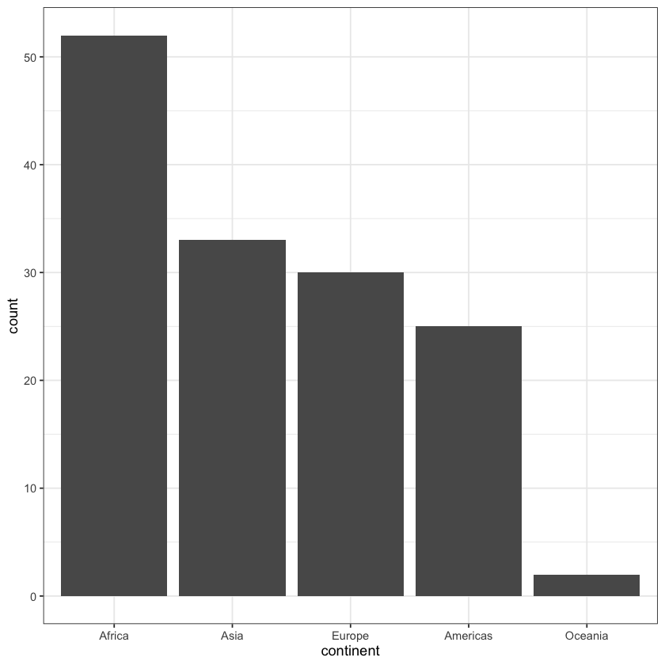
Which table specifies the seven grammar of graphics components of this plot? Choose the best option, and place your choice in a variable named answer1.0
| Grammar Component | Specification |
|---|---|
| data | gapminder |
| aesthetic mapping | continent |
| geometric object | bars |
| scale | logarithmic |
| statistical transform | none |
| coordinate system | rectangular |
| facetting | none |
| Grammar Component | Specification |
|---|---|
| data | gapminder |
| aesthetic mapping | continent |
| geometric object | bars |
| scale | linear |
| statistical transform | none |
| coordinate system | rectangular |
| facetting | none |
| Grammar Component | Specification |
|---|---|
| data | gapminder |
| aesthetic mapping | year |
| geometric object | bars |
| scale | linear |
| statistical transform | none |
| coordinate system | rectangular |
| facetting | none |
# answer1.0 <- "FILL_THIS_IN"
### BEGIN SOLUTION
answer1.0 <- "B"
### END SOLUTION### HASHED AUTOTEST answer1.0Question 1.1
{points: 1}
Consider the following plot. Don’t concern yourself with the code at this point.
ggplot(gapminder, aes(gdpPercap, lifeExp)) +
geom_point(alpha = 0.1) +
scale_x_log10("GDP per capita", labels = scales::dollar_format()) +
theme_bw() +
ylab("Life Expectancy")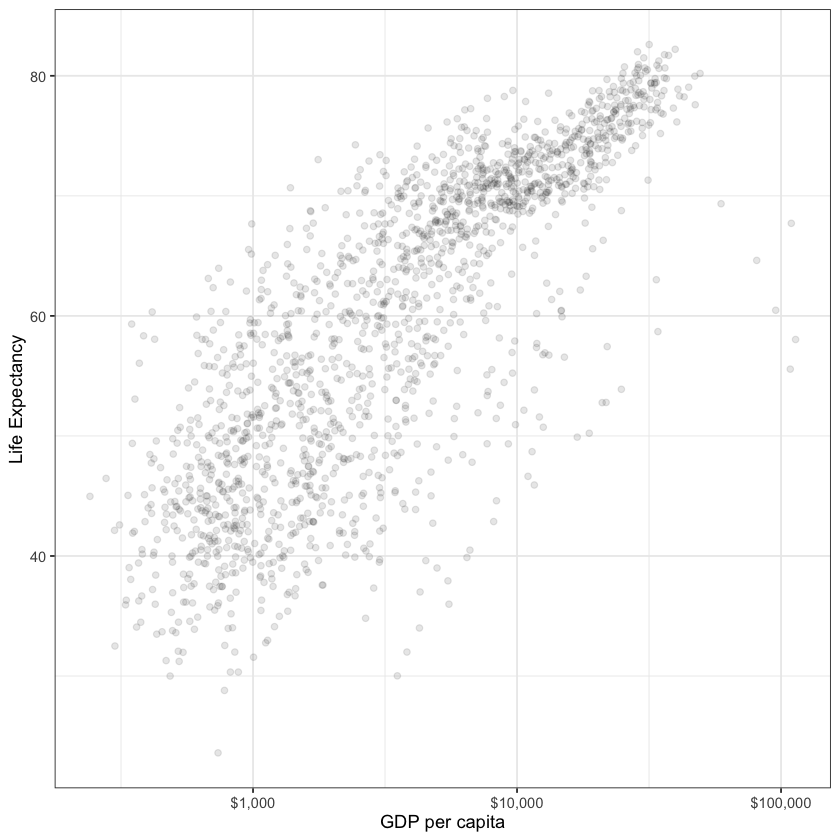
What is the aesthetic mapping in this plot? Place your answer in a variable named answer1.1
alpha = 0.1
x: gdpPercap, y: lifeExp
none
“Life Expectancy”
# answer1.1 <- "FILL_THIS_IN"
### BEGIN SOLUTION
answer1.1 <- "B"
### END SOLUTION### HASHED AUTOTEST answer1.1Part 2: ggplot2 Syntax
The following is a tsibble (a special type of tibble containing time series data), stored in the variable mauna, of CO\(_2\) concentrations collected monthly at the Mauna Loa station.
Execute this code to store the data in mauna:
mauna <- tsibble::as_tsibble(co2) %>%
rename(month = index, conc = value)
head(mauna)| month | conc |
|---|---|
| <mth> | <dbl> |
| 1959 Jan | 315.42 |
| 1959 Feb | 316.31 |
| 1959 Mar | 316.50 |
| 1959 Apr | 317.56 |
| 1959 May | 318.13 |
| 1959 Jun | 318.00 |
QUESTION 2.0
{points: 1}
Use ggplot2 to produce a line chart showing the concentration of CO\(_2\) over time in the mauna dataset. Specifically, the plot should have the following grammar components:
| Grammar Component | Specification |
|---|---|
| data | mauna |
| aesthetic mapping | x: month, y: conc |
| geometric object | lines |
| scale | linear |
| statistical transform | none |
| coordinate system | rectangular |
| facetting | none |
Fill in the blanks to obtain the plot, storing your plot in a variable named answer2.0.
answer2.0 <- ggplot(FILL_THIS_IN, aes(FILL_THIS_IN, FILL_THIS_IN)) +
FILL_THIS_IN()# Produce the plot
### BEGIN SOLUTION
answer2.0 <- ggplot(mauna, aes(x = month, y = conc)) +
geom_line()
### END SOLUTION
print(answer2.0)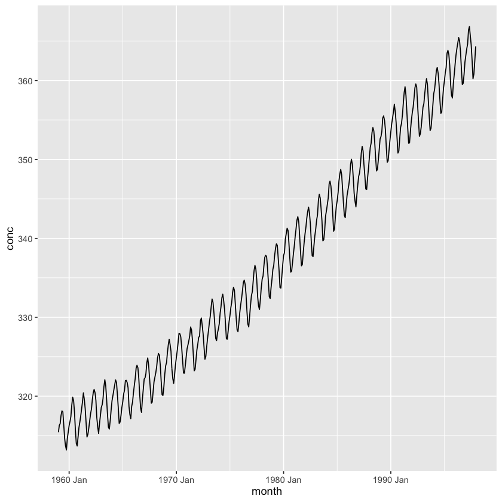
### HASHED AUTOTEST answer2.0QUESTION 2.1
{points: 1}
You can store the output of the plot in a variable, too. The plot that you created in 2.0 is stored in the variable answer2.0. Add a layer to answer2.0 that adds green points to the plot. (Not a pretty plot; just expository.)
answer2.1 <- answer2.0 +
FILL_THIS_IN(colour = FILL_THIS_IN)# Produce your plot here.
### BEGIN SOLUTION
answer2.1 <- answer2.0 +
geom_point(colour = "green")
### END SOLUTION
print(answer2.1)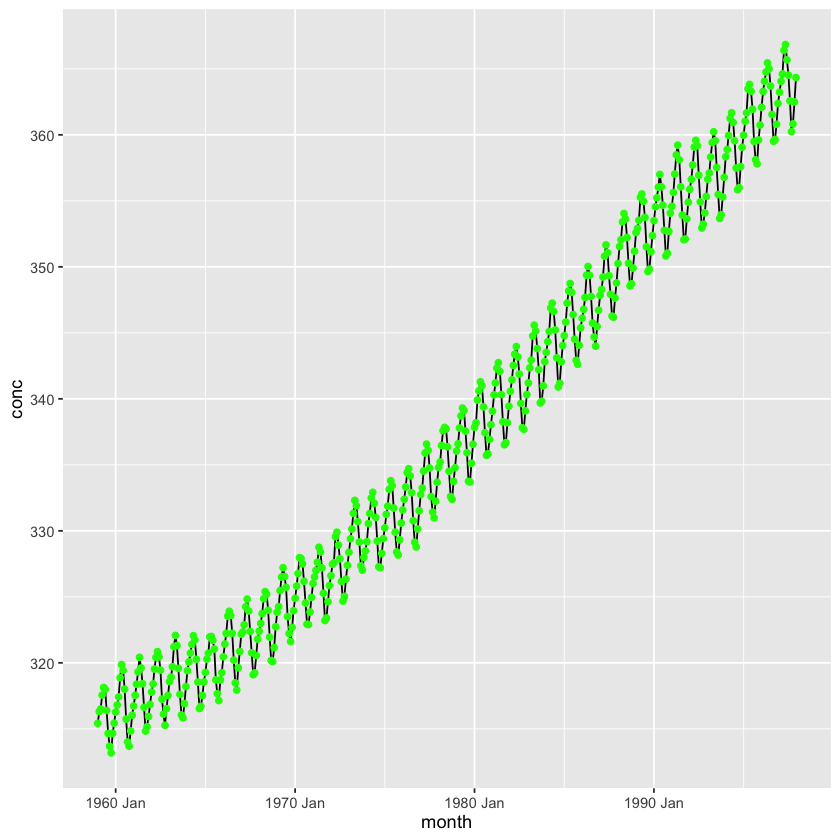
### HASHED AUTOTEST answer2.1QUESTION 2.2
{points: 1}
Besides specifying the aesthetic mappings in the ggplot() function, you can also specify the aesthetic mappings in a geom layer instead of, or in addition to, in the ggplot() function, with the following rules:
- Aesthetics appearing in a
geomlayer apply only to that layer. - If there are conflicting aesthetics in both the
ggplot()function and thegeomlayer, thegeomlayer takes precedence.
The following code mistakenly puts the month variable on the y-axis. Fill in the FILL_THIS_IN so that conc is on the y-axis (and month remains on the x-axis), but leave the rest of the code intact. Note what happens to the y-axis label, though! Store your answer in a variable named answer2.2
answer2.2 <- ggplot(mauna, aes(x = month, y = month)) +
geom_point(FILL_THIS_IN)# Produce the plot here.
### BEGIN SOLUTION
answer2.2 <- ggplot(mauna, aes(x = month, y = month)) +
geom_point(aes(y = conc))
### END SOLUTION
print(answer2.2)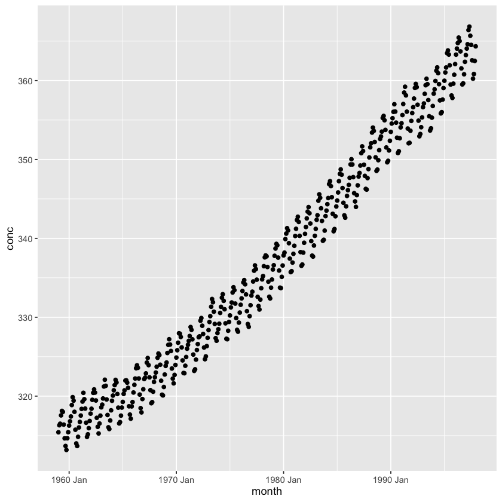
### HASHED AUTOTEST answer2.2QUESTION 2.3
{points: 1}
Can you fix what is wrong with the following code?
#install.packages(“tsibble”)
answer2.3 <- ggplot(gapminder) +
geom_point(x = gdpPercap, y = lifeExp, alpha = 0.1)# Produce your plot here.
### BEGIN SOLUTION
answer2.3 <- ggplot(gapminder) +
geom_point(aes(x = gdpPercap, y = lifeExp), alpha = 0.1)
### END SOLUTION
print(answer2.3)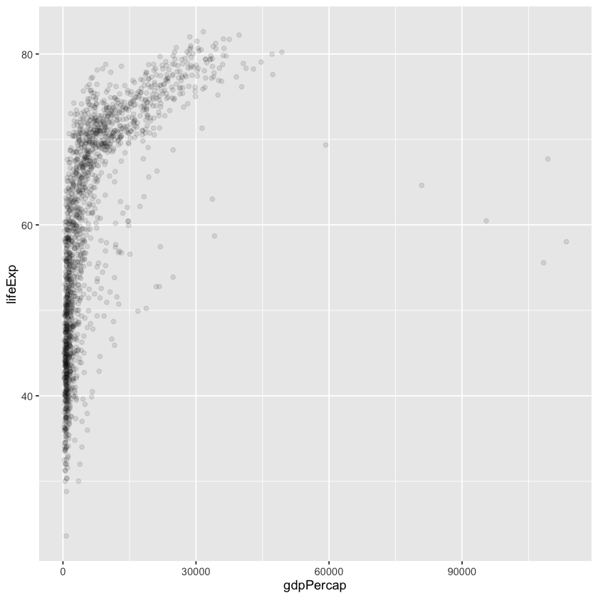
### HASHED AUTOTEST answer2.3QUESTION 2.4
{points: 1}
The following mock dataset marks the (x,y) position of a caribou at four time points (be sure to execute the code in the following cell):
caribou <- tribble(
~time, ~x, ~y,
4, 0.4, 0.5,
1, 0.3, 0.3,
2, 0.8, 0.7,
3, 0.5, 0.9
)Show the path of the caribou by connecting the dots ordered by time. Add an arrow with arrow = arrow() in the appropriate geom layer, and add the time label with geom_text(). Store the plot in a variable named answer2.4.
answer2.4 <- caribou %>%
arrange(time) %>%
ggplot(aes(FILL_THIS_IN)) +
FILL_THIS_IN(FILL_THIS_IN) +
geom_text(aes(FILL_THIS_IN), nudge_x = 0.02) +
theme_minimal()# Produce the plot
### BEGIN SOLUTION
answer2.4 <- caribou %>%
arrange(time) %>%
ggplot(aes(x, y)) +
geom_path(arrow = arrow()) +
geom_text(aes(label = time), nudge_x = 0.02) +
theme_minimal()
### END SOLUTION
print(answer2.4)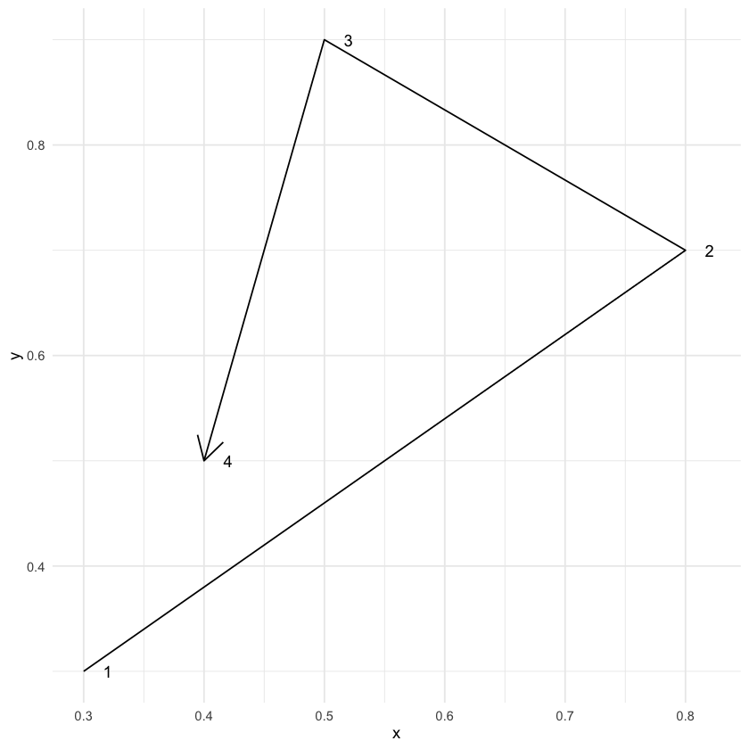
### HASHED AUTOTEST answer2.4QUESTION 2.5
{points: 1}
Here’s the number of people having a certain hair colour from a sample of 592 people (be sure to run the following code chunk):
(hair <- as_tibble(HairEyeColor) %>%
count(Hair, wt = n))| Hair | n |
|---|---|
| <chr> | <dbl> |
| Black | 108 |
| Blond | 127 |
| Brown | 286 |
| Red | 71 |
The following code is missing a statement in geom_bar(). Fix the code.
answer2.5 <- ggplot(hair, aes(Hair, n)) +
geom_bar(aes(???????))Good to know: if you wanted geom_bar to specify a proportion instead of a count on the y-axis, you can do this by specifying after_stat(prop) as the y variable in your aesthetic mapping.
# Produce the plot here.
### BEGIN SOLUTION
answer2.5 <- ggplot(hair, aes(Hair)) +
geom_bar(aes(weight = n))
### END SOLUTION
print(answer2.5)
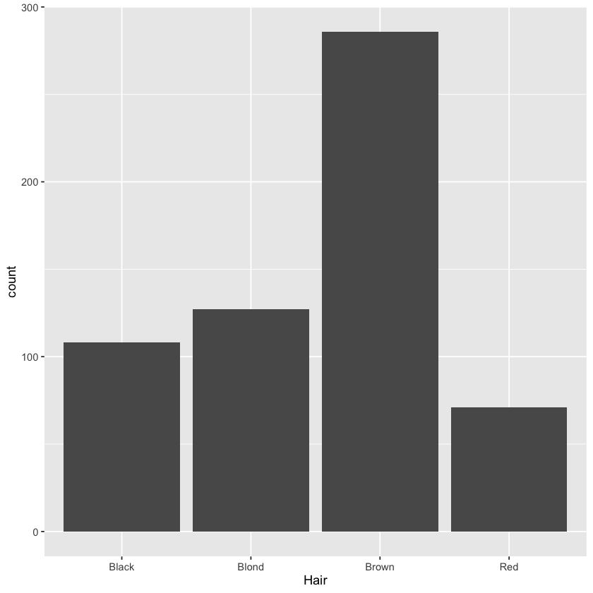
### HASHED AUTOTEST answer2.5QUESTION 2.6
{points: 1}
Using the penguins dataset from the palmerpenguins package, suppose you want to visualize the number of penguins per island. It seems that a bar chart could be useful for this purpose. Give it a try! Hint: bar charts only need specifying one axis (use the x axis). Store your answer in a variable named answer2.6
answer2.6 <- ggplot(penguins, aes(FILL_THIS_IN)) + FILL_THIS_IN()Good to know: if you wanted to colour the bars by sex, producing a side-by-side bar chart, then in addition to specifying the fill = sex aesthetic, just specify the position = "dodge" option within the geom that creates the bar.
# Produce your plot here.
### BEGIN SOLUTION
answer2.6 <- ggplot(penguins, aes(island)) + geom_bar()
### END SOLUTION
print(answer2.6)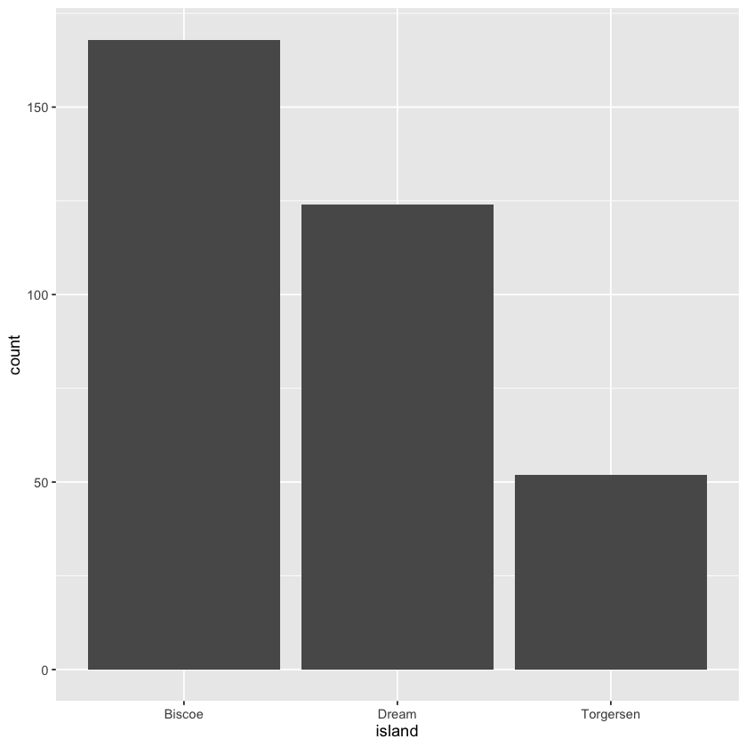
### HASHED AUTOTEST answer2.6Great job! FYI: sometimes it’s useful to swap the axes, especially if the category (penguin) names are long. Here is another handy way to flip the coordinates, instead of plotting the graph again.
answer2.6 + coord_flip()
QUESTION 2.7
{points: 1}
In the penguins dataset from the palmerpenguins package, explore the relationship between flipper length and body mass (if any!). A scaffold of the ggplot2 recipe can be found below. Use the following parameters:
- Flipper length should be on the x axis, and body mass should be on the y axis.
- Color by species.
- Set the size of the points to 3, and the alpha (transparency) to 0.8.
Store the result in a variable named answer2.7
If a warning message for missing values appears, you can safely ignore it.
answer2.7 <- ggplot(FILL_THIS_IN, aes(FILL_THIS_IN, FILL_THIS_IN)) +
geom_point(aes(color = FILL_THIS_IN),
size = FILL_THIS_IN,
alpha = FILL_THIS_IN) # Produce your plot here.
### BEGIN SOLUTION
answer2.7 <- ggplot(penguins, aes(flipper_length_mm, body_mass_g)) +
geom_point(aes(color = species),
size = 3,
alpha = 0.8)
### END SOLUTION
print(answer2.7)Warning message:
“Removed 2 rows containing missing values or values outside the scale range
(`geom_point()`).”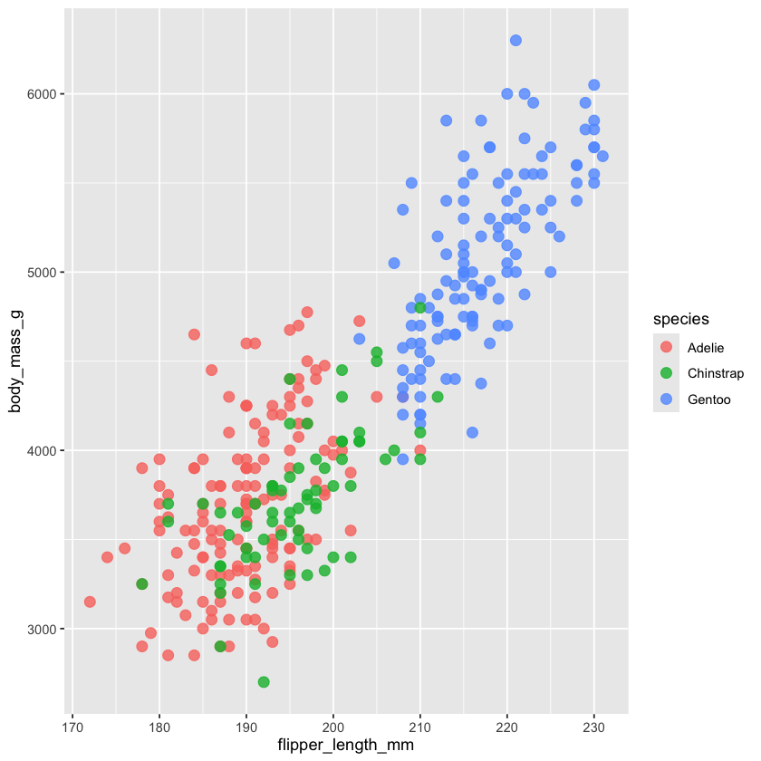
### HASHED AUTOTEST answer2.7QUESTION 2.8
{points: 1}
Try the same as in 2.7 (flipper length vs. body mass), but this time coloring by island! See if you can write the code without looking at the last question. Store your answer in a variable named answer2.8. If a warning message for missing values appears, you can safely ignore it.
answer2.8 <- ggplot(FILL_THIS_IN, aes(FILL_THIS_IN, FILL_THIS_IN)) +
geom_point(aes(color = FILL_THIS_IN),
size = FILL_THIS_IN,
alpha = FILL_THIS_IN) # Produce your plot here.
### BEGIN SOLUTION
answer2.8 <- ggplot(penguins, aes(flipper_length_mm, body_mass_g)) +
geom_point(aes(color = island),
size = 3,
alpha = 0.8)
### END SOLUTION
plot(answer2.8)Warning message:
“Removed 2 rows containing missing values or values outside the scale range
(`geom_point()`).”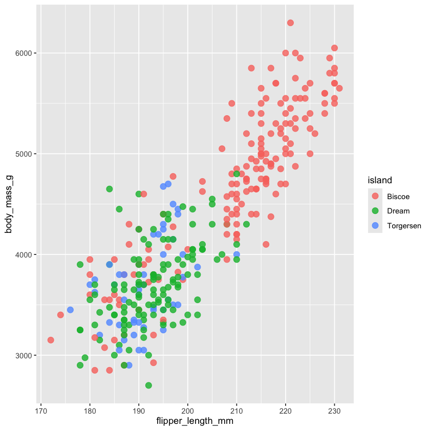
### HASHED AUTOTEST answer2.8QUESTION 2.9
{points: 1}
Maybe you want to explore the distribution of body mass. Histograms are useful for this purpose.
Make a histogram of penguin body mass, and store the result in a variable named answer2.9. But, instead of the height of the bars representing a count, have it represent the density by specifying after_stat(density) as the y variable.
answer2.9 <- ggplot(FILL_THIS_IN, aes(FILL_THIS_IN)) +
geom_histogram()You can safely ignore the warning about the scale range.
# Produce your plot here.
### BEGIN SOLUTION
answer2.9 <- ggplot(penguins, aes(body_mass_g, after_stat(density))) +
geom_histogram(bins = 25)
### END SOLUTION
print(answer2.9)Warning message:
“Removed 2 rows containing non-finite outside the scale range (`stat_bin()`).”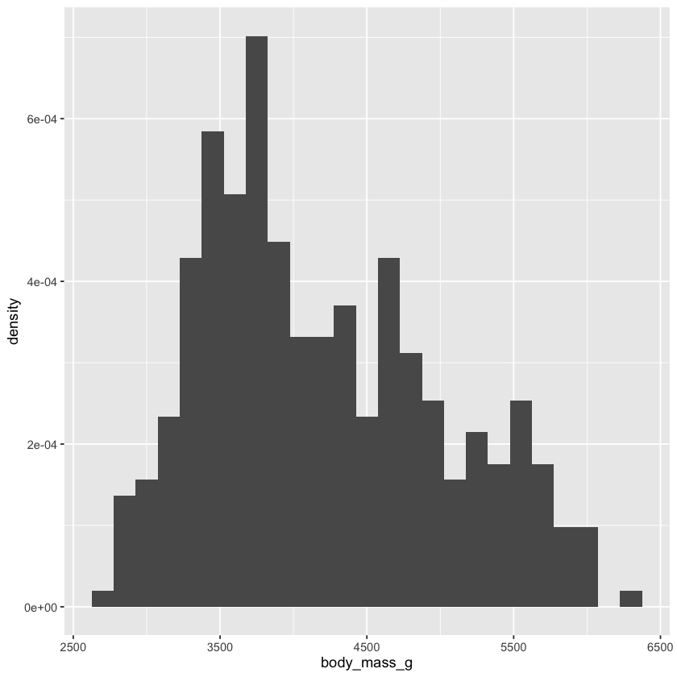
### HASHED AUTOTEST answer2.9QUESTION 2.10
{points: 1}
Another option for viewing distributions, besides histograms, is to plot the kernel density function. This geom can be achieved with geom_density().
Plot the density of body mass for each species. Distinguish species by colour (if you decide to use the fill aesthetic, be sure to add some alpha transparency). Store your answer in a variable named answer2.10.
answer2.10 <- ggplot(penguins, aes(x = FILL_THIS_IN)) +
geom_density(FILL_THIS_IN)You can again ignore the warning message about the scale range.
# Produce your plot here.
### BEGIN SOLUTION
# Either:
answer2.10 <- ggplot(penguins, aes(x = body_mass_g)) +
geom_density(aes(colour = species))
# or
answer2.10 <- ggplot(penguins, aes(x = body_mass_g)) +
geom_density(aes(fill = species), alpha = 0.5)
### END SOLUTION
print(answer2.10)Warning message:
“Removed 2 rows containing non-finite outside the scale range
(`stat_density()`).”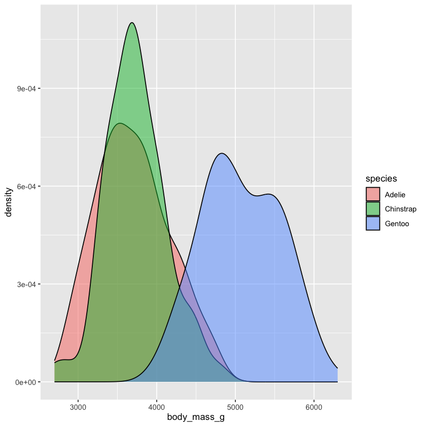
### HASHED AUTOTEST answer2.10QUESTION 2.11
{points: 1}
Let’s look at two more types of plot to once again explore the relationship between body mass and penguin species. Stripplots are univariate scatterplots, and they are a useful way of visualizing how, in this case, body mass is spread within each species.
The large amount of overlapping points in the following plot makes it hard to to visualize distributions. Change the plot to a jitterplot by using a different geom. Tip: use width = 0.1 so that the points don’t jitter too far away.
answer2.11 <- ggplot(penguins, aes(species, body_mass_g)) +
geom_point(alpha = 0.5)Again, you can ignore the scale range warning.
# Produce the plot here.
### BEGIN SOLUTION
answer2.11 <- ggplot(penguins, aes(species, body_mass_g)) +
geom_jitter(width = 0.1)
### END SOLUTION
print(answer2.11)Warning message:
“Removed 2 rows containing missing values or values outside the scale range
(`geom_point()`).”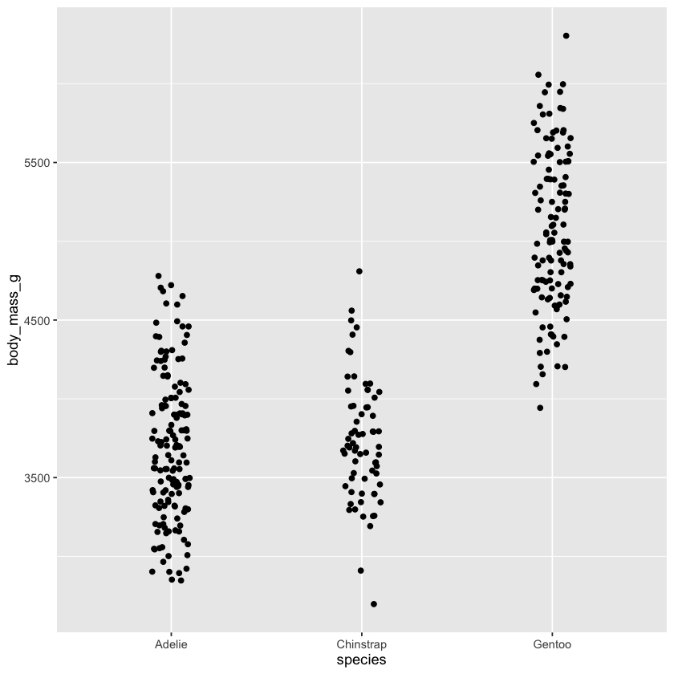
### HASHED AUTOTEST answer2.11QUESTION 2.12
{points: 1}
Boxplots are another approach for visualizing distributions. Reproduce the plot in Question 2.11, but as boxplots instead of stripplots. Do so by filling in the following scaffolding. Hint: there’s a geom for boxplots. Tip: as in the jitterplots, we recommend changing the width of the boxplots, too – say width = 0.2.
answer2.12 <- ggplot(FILL_THIS_IN, aes(FILL_THIS_IN, FILL_THIS_IN)) +
FILL_THIS_IN(width = 0.2)Ignore the scale range warning.
# Produce your plot here.
### BEGIN SOLUTION
answer2.12 <- ggplot(penguins, aes(species, body_mass_g)) +
geom_boxplot(width = 0.2)
### END SOLUTION
print(answer2.12)Warning message:
“Removed 2 rows containing non-finite outside the scale range
(`stat_boxplot()`).”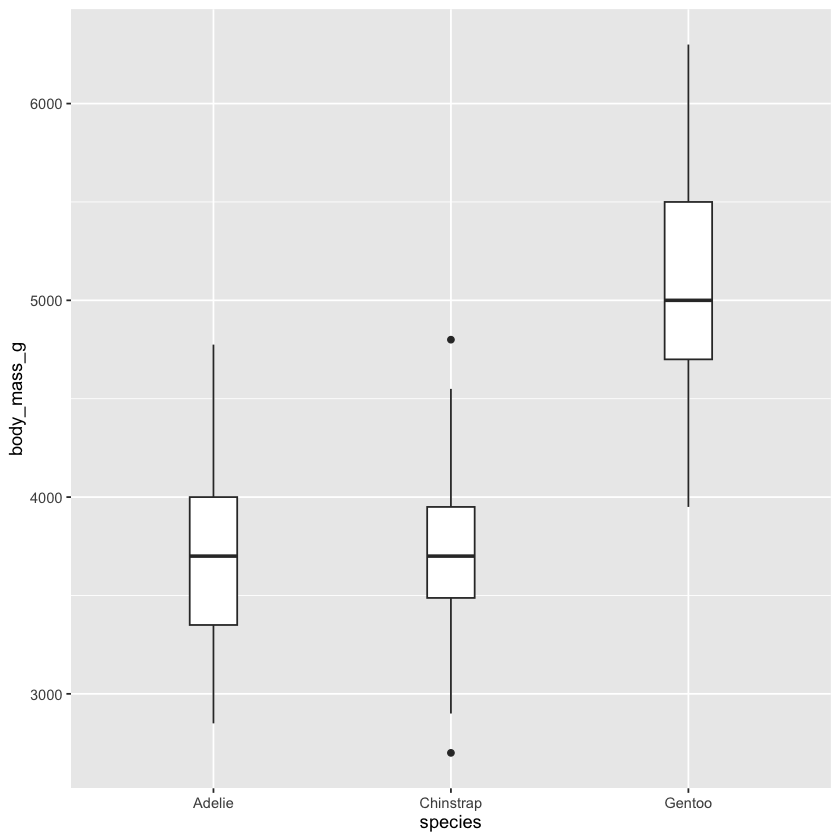
### HASHED AUTOTEST answer2.12Test passed 😸QUESTION 2.13
{points: 1}
Yet another way to plot distributions is to stack multiple kernel density estimates across different categories on the y-axis. The effect is like viewing a mountain range from an airplane.
Plot the distribution of life expectancy for European countries, using a ridge plot, by filling in the following scaffolding. Hint: use the geom_density_ridges() geom from the ggridges package.
(Sure, the life expectancies associated with a country are observed over time, and are definitely not “iid” in the statistical sense, yet this plot still has value.)
answer2.13 <- gapminder %>%
filter(continent == "Europe") %>%
ggplot(aes(FILL_THIS_IN, FILL_THIS_IN)) +
ggridges::FILL_THIS_IN()# Produce the plot here.
### BEGIN SOLUTION
answer2.13 <- gapminder %>%
filter(continent == "Europe") %>%
ggplot(aes(lifeExp, country)) +
ggridges::geom_density_ridges()
### END SOLUTION
print(answer2.13)Picking joint bandwidth of 2.03
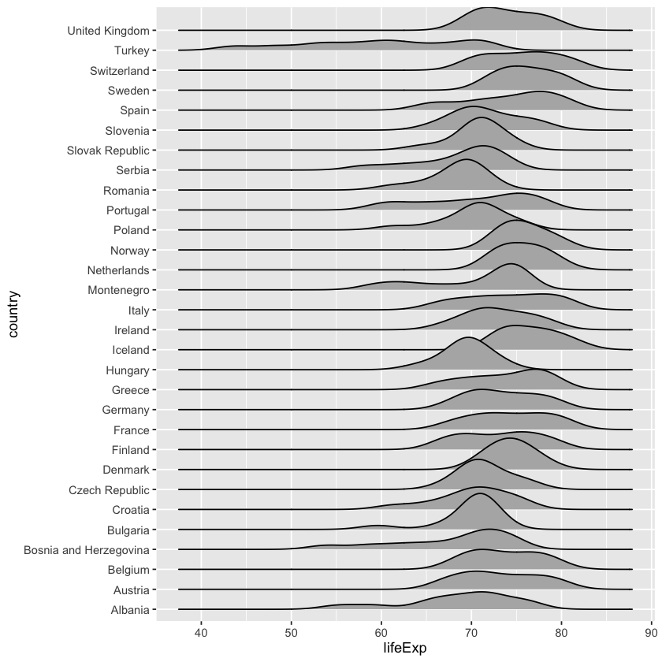
### HASHED AUTOTEST answer2.13QUESTION 2.14
{points: 1}
The code below produces a scatterplot of GDP per capita against life expectancy, with points coloured by continent. But, it’s hard to distinguish between continents. Modify the plot so that continents are separated into their own panels (hint: use facetting).
Tip: Change the x-axis text to be in “dollar format” with labels = scales::dollar_format() when specifying the scale.
answer2.14 <- gapminder %>%
ggplot(aes(gdpPercap, lifeExp, colour = continent)) +
geom_point(alpha = 0.2) +
scale_x_log10()### BEGIN SOLUTION
answer2.14 <- gapminder %>%
ggplot(aes(gdpPercap, lifeExp)) +
facet_wrap(~ continent, nrow = 1) +
geom_point() +
scale_x_log10(labels = scales::dollar_format())
### END SOLUTION
print(answer2.14)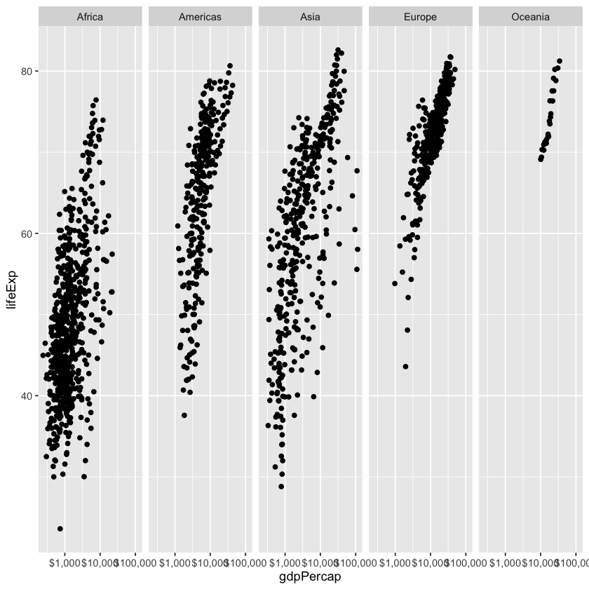
### HASHED AUTOTEST answer2.14Part 3: Fix the plots!
In this section, we’ll be looking at some erroneous plots and fixing them.
QUESTION 3.0
{points: 1}
Besides alpha transparency, we can fix the issue of overlapping points by making the points smaller. The following code fails to reduce the point size to 0.1 – can you fix it?
answer3.0 <- ggplot(gapminder) +
geom_point(aes(gdpPercap, lifeExp, size = 0.1)) +
scale_x_log10(labels = scales::dollar_format())### BEGIN SOLUTION
answer3.0 <- ggplot(gapminder) +
geom_point(aes(gdpPercap, lifeExp), size = 0.1) +
scale_x_log10(labels = scales::dollar_format())
### END SOLUTION
print(answer3.0)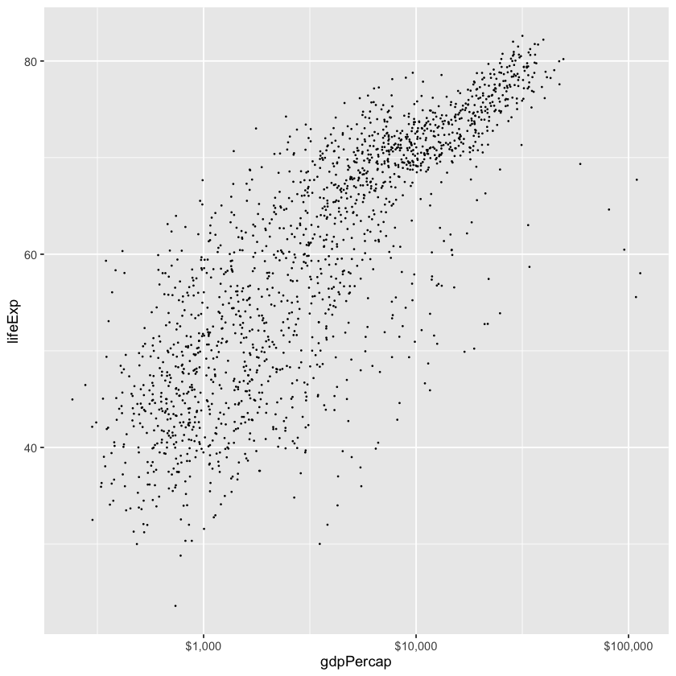
### HASHED AUTOTEST answer3.0QUESTION 3.1
{points: 1}
Fix the plot so that the size of the dots is related to the body mass, and so that the dots are colored by species.
Assign your answer to a variable named answer3.1.
answer3.1 <- ggplot(penguins, aes(x = body_mass_g, y = flipper_length_mm) +
geom_point(shape = 21,
size = species,
fill = island))You can ignore the warning about missing values.
### BEGIN SOLUTION
answer3.1 <- ggplot(penguins, aes(x = body_mass_g,
y = flipper_length_mm,
size = body_mass_g,
fill = species)) +
geom_point(shape = 21)
### END SOLUTION
print(answer3.1)Warning message:
“Removed 2 rows containing missing values or values outside the scale range
(`geom_point()`).”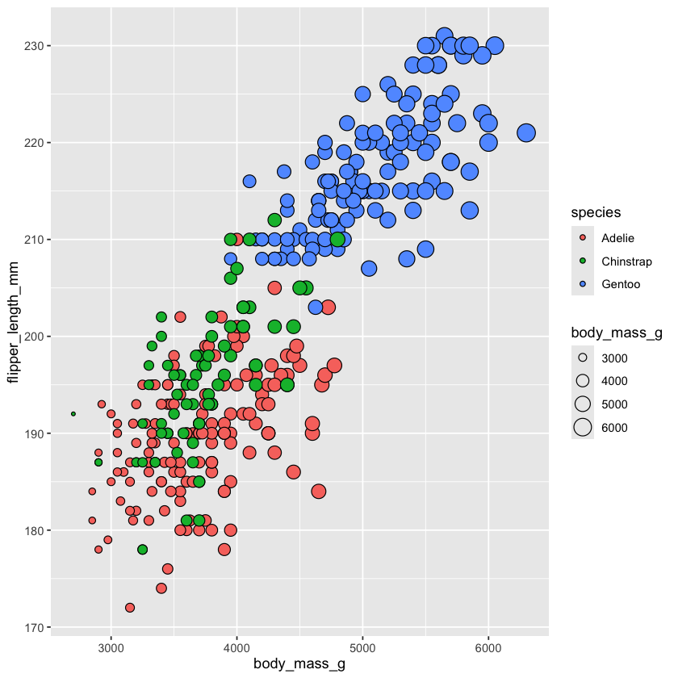
### HASHED AUTOTEST answer3.1QUESTION 3.2
{points: 1}
Using the penguins dataset from the palmerpenguins package, the following code aims to view the relationship between flipper length (X) and body mass (Y) for each species (facet), by sex (colour). Fix the mistake in the code.
answer3.2 <- ggplot(penguins, aes(flipper_length_mm, body_mass_g, facet = species)) +
geom_point(aes(color = sex),
size = 3,
alpha = 0.8) +
theme_minimal() +
facet_wrap(~ species)Ignore the warning about missing values/scale range.
### BEGIN SOLUTION
answer3.2 <- ggplot(penguins, aes(flipper_length_mm, body_mass_g, facet = species)) +
geom_point(aes(color = sex),
size = 3,
alpha = 0.8) +
theme_minimal() +
facet_wrap(~ species)
### END SOLUTION
print(answer3.2)Warning message:
“Removed 2 rows containing missing values or values outside the scale range
(`geom_point()`).”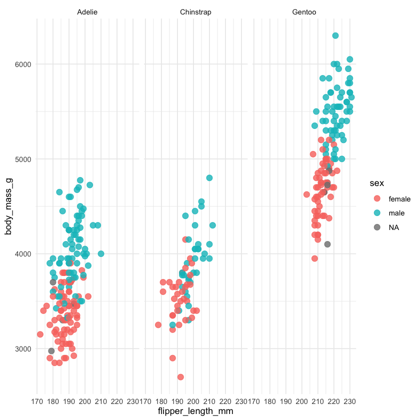
### HASHED AUTOTEST answer3.2QUESTION 3.3
{points: 1}
The following plot is a failed attempt at plotting each country’s life expectancy over time, so that each country gets its own line. To plot multiple lines in one graph, we need to group by country – but aren’t we doing that in the second line? Fix the code.
answer3.3 <- gapminder %>%
group_by(country) %>%
ggplot(aes(year, lifeExp)) +
facet_wrap(~ continent) +
geom_line(alpha = 0.2) +
theme_minimal()# Produce the plot here.
### BEGIN SOLUTION
answer3.3 <- ggplot(gapminder, aes(year, lifeExp)) +
facet_wrap(~ continent) +
geom_line(aes(group = country), alpha = 0.2) +
theme_minimal()
### END SOLUTION
print(answer3.3)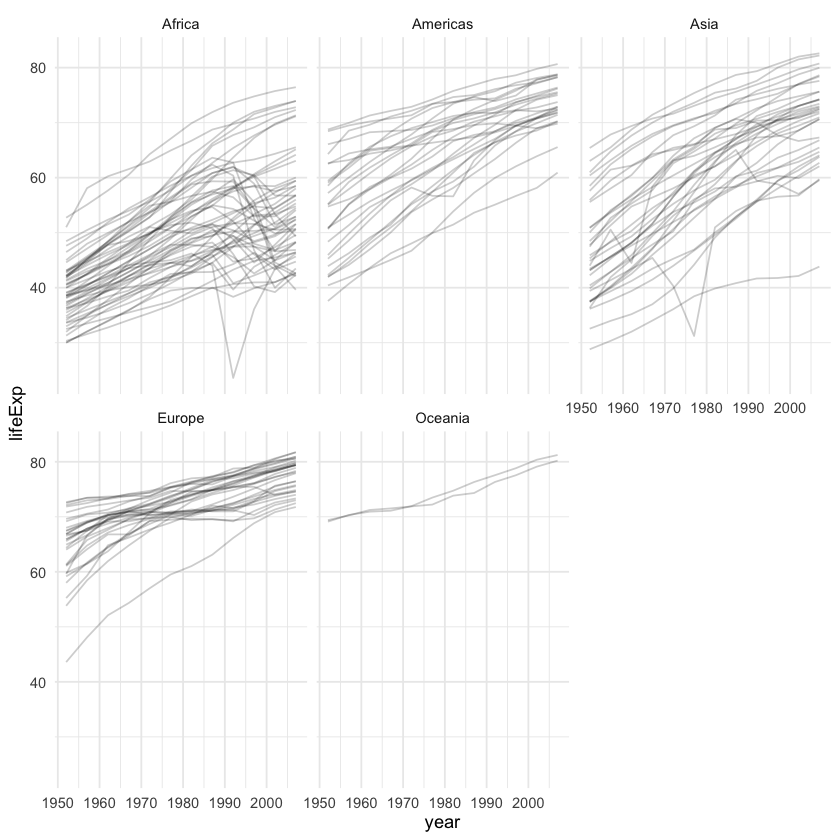
### HASHED AUTOTEST answer3.3Part 4: Challenges (Not for points)
Use your creativity to produce plots for the following situations. This is not for points. Suggested solutions are provided in Part 5. Note that you may need to incorporate data manipulation here.
QUESTION 4.0
Using the gapminder dataset: for each continent, how does the number of countries having a “low” life expectancy change across time? Let’s say life expectancy is “low” if it’s less than its continent’s median life expectancy as observed on the latest year (2007) in the gapminder dataset.
# Your code here. QUESTION 4.1
From Question 3.3:
The following plot is a failed attempt at plotting each country’s life expectancy over time, so that each country gets its own line. To plot multiple lines in one graph, we need to group by country – but aren’t we doing that in the second line? Fix the code.
answer3.3 <- gapminder %>%
group_by(country) %>%
ggplot(aes(year, lifeExp)) +
facet_wrap(~ continent) +
geom_line(alpha = 0.2) +
theme_minimal()In addition:
- Produce a band representing the 80% prediction interval of life expectancies for each continent and each year. Hint: use Base R’s
quantile()function withprobs = 0.9andprobs = 0.1to produce the upper and lower bands, and usegeom_ribbon()as your geometric object. - Drop Oceania, as it only has two countries on record (so a prediction interval wouldn’t make much sense).
# Your code here. QUESTION 4.2
From the gapminder dataset, was a drop in life expectancy just as likely for any year, or were some years more prone to see a drop than others?
# Your code hereQUESTION 4.3
Using the gapminder dataset, how has the distribution of GDP per capita (across countries) changed over time for each continent?
# Your code herePart 5: Suggested Solutions to Part 4
Suggested Answer to QUESTION 4.0
Using the
gapminderdataset: for each continent, how does the number of countries having a “low” life expectancy change across time? Let’s say life expectancy is “low” if it’s less than its continent’s median life expectancy as observed on the latest year (2007) in the gapminder dataset.
gapminder %>%
group_by(continent, year) %>%
mutate(median = median(lifeExp)) %>%
ungroup(year) %>%
arrange(year) %>%
filter(lifeExp < last(median)) %>%
count(continent, year) %>%
ggplot(aes(year, n)) +
geom_line(aes(colour = continent)) +
ylab("# of countries with low lifeExp") +
scale_x_continuous("") +
scale_colour_discrete("") +
theme_minimal()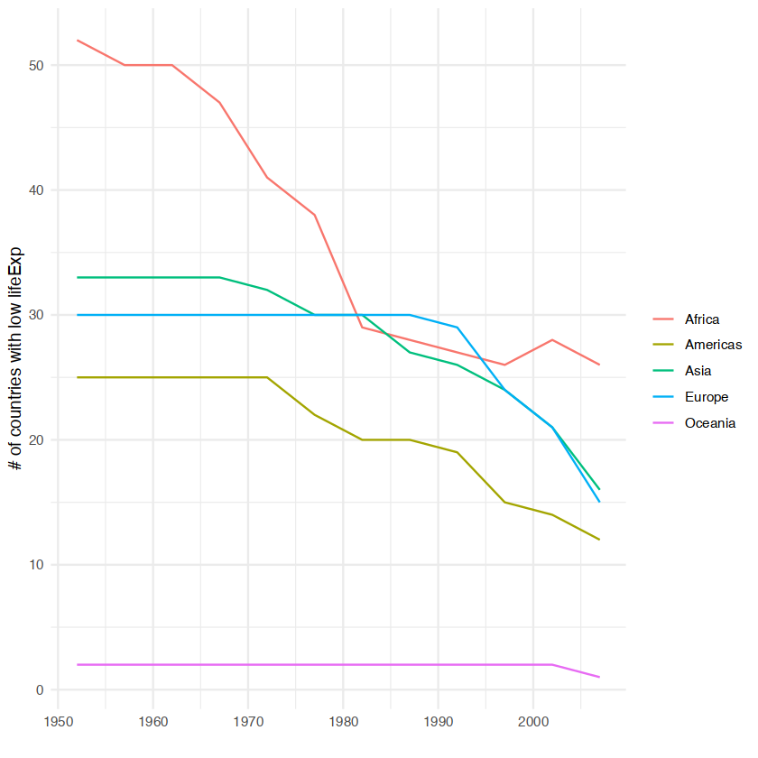
Suggested Answer to QUESTION 4.1
From Question 3.3:
The following plot is a failed attempt at plotting each country’s life expectancy over time, so that each country gets its own line. To plot multiple lines in one graph, we need to group by country – but aren’t we doing that in the second line? Fix the code.
answer3.3 <- gapminder %>% group_by(country) %>% ggplot(aes(year, lifeExp)) + facet_wrap(~ continent) + geom_line(alpha = 0.2) + theme_minimal()In addition:
- Produce a band representing the 80% prediction interval of life expectancies for each continent and each year. Hint: use Base R’s
quantile()function withprobs = 0.9andprobs = 0.1to produce the upper and lower bands, and usegeom_ribbon()as your geometric object.- Drop Oceania, as it only has two countries on record (so a prediction interval wouldn’t make much sense).
gapminder %>%
filter(continent != "Oceania") %>%
group_by(continent, year) %>%
mutate(upper = quantile(gdpPercap, 0.9),
lower = quantile(gdpPercap, 0.1)) %>%
ggplot(aes(year, gdpPercap)) +
geom_ribbon(aes(ymin = lower, ymax = upper), alpha = 2 / 3, fill = "gray") +
geom_line(aes(group = country, colour = continent), alpha = 1 / 4) +
facet_wrap(~ continent) +
scale_y_log10("GDP Per Capita", labels = scales::dollar_format()) +
guides(colour = FALSE) +
theme_bw()Warning message:
“`guides(<scale> = FALSE)` is deprecated. Please use `guides(<scale> = "none")` instead.”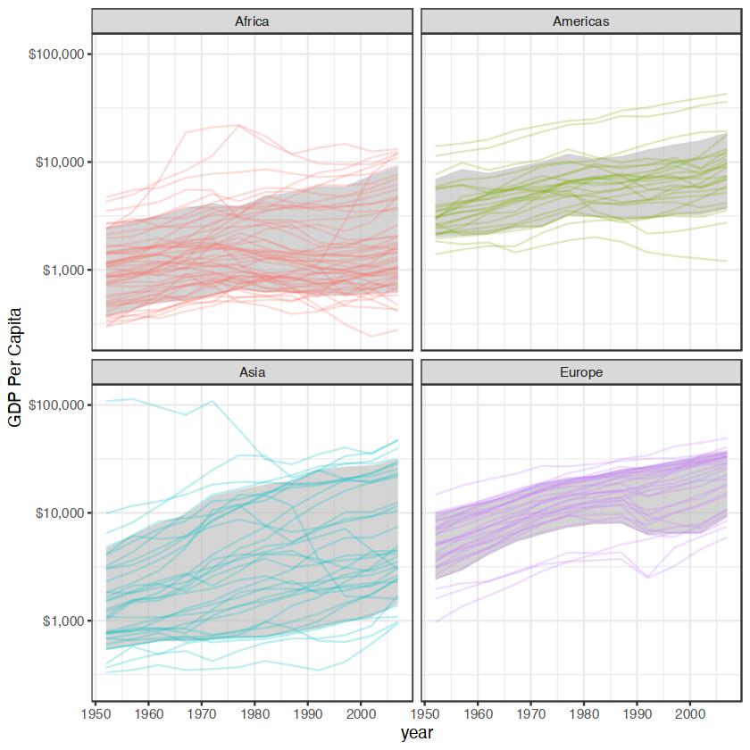
Suggested Answer to QUESTION 4.2
From the gapminder dataset, was a drop in life expectancy just as likely for any year, or were some years more prone to see a drop than others?
gapminder %>%
group_by(country) %>%
arrange(year) %>%
mutate(inc = lifeExp - lag(lifeExp)) %>%
filter(inc < 0) %>%
ggplot(aes(year)) +
geom_bar() +
theme_minimal() +
ylab("Number of countries with a\ndrop in life expectancy")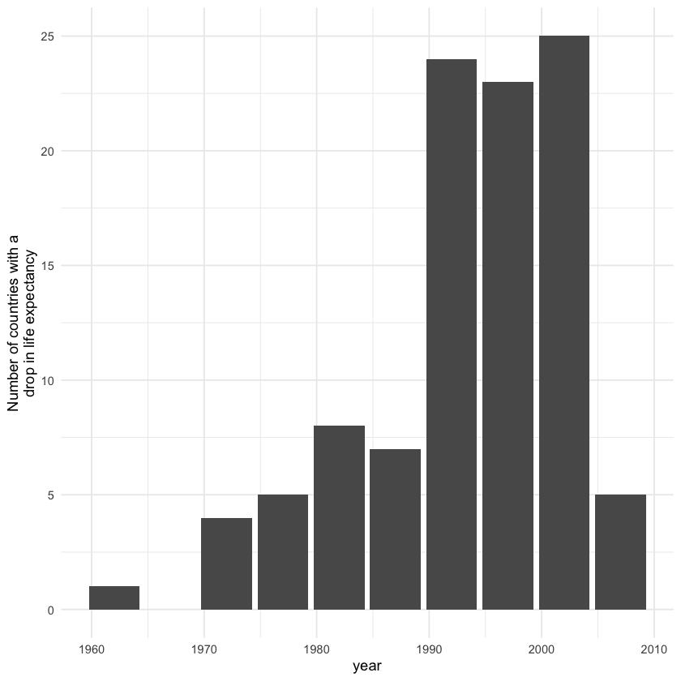
Suggested Answer to QUESTION 4.3
Using the gapminder dataset, how has the distribution of GDP per capita (across countries) changed over time for each continent?
A plot like the one below might need some buildup before presenting it to an audience. Or, consider facetting.
gapminder %>%
filter(continent != "Oceania") %>%
ggplot(aes(gdpPercap, factor(year))) +
ggridges::geom_density_ridges(aes(fill = continent), alpha = 1/3) +
scale_x_log10("GDP per capita", labels = scales::dollar_format()) +
ylab("Year") +
theme_minimal() +
scale_fill_discrete("")Picking joint bandwidth of 0.148
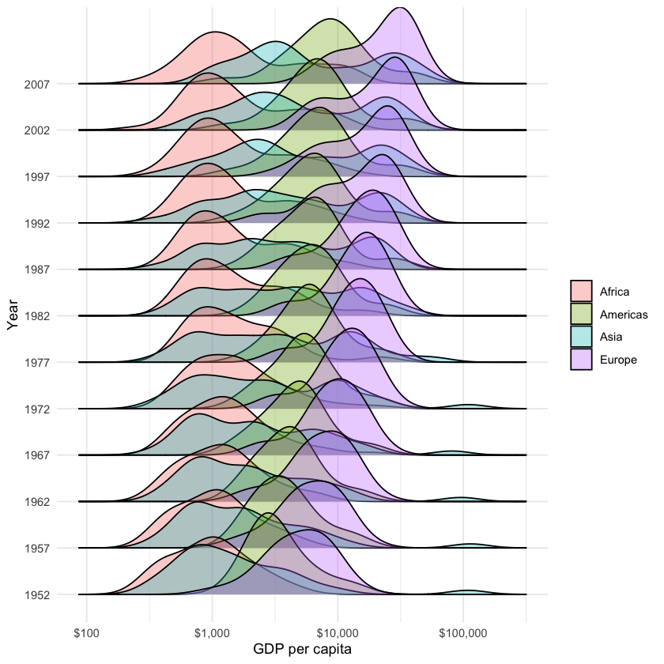
That’s all! 🏆
Please Restart and Run all, check for errors, Save, and submit this worksheet on Canvas.
Attribution
Thanks to Icíar Fernández Boyano, Victor Yuan, and Vincenzo Coia for putting this worksheet together.
The following resources were used as inspiration in the creation of this worksheet:
- R4DS Data Manipulation Chapter
- Rebecca Barter’s post on across()
- STAT545 materials from previous years
- Palmer penguins dataset